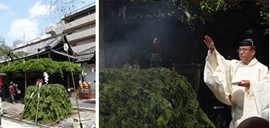
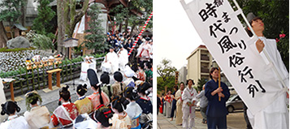
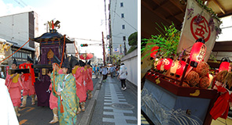
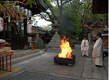
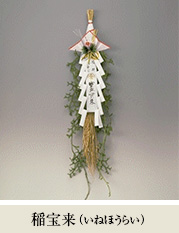

年中行事
- 歳旦祭 元日 午後7時
- 年頭最初の祭儀。初春の御神前に神饌（お供え物）を捧げ、一年の皇室の弥栄、世界の平和と国家の安泰、皆様方の御多幸をお祈りするお祭です。
- 初詣 元日～5日
- 当宮には正月三が日、一年の諸願成就の御祈願のため日本全国より毎年約1万人の方が参拝されます。
また初詣にお越しの皆様に、熱いお茶のご用意をしていますのでご自由にお飲みいただけます。お手洗いもございますので、お困りの時には是非お立ち寄り下さい。
- 初金比羅祭 1月10日 午前10時
- その年最初の金比羅大神様の御縁日。残念ながら屋台などの露店はございませんが、月参りの方、御崇敬の皆様が多くお参りされます。昨年切れなかった悪縁を新年こそは断ち切りたいという方は、金比羅大神様にゆかり深いこの日にどうぞお参り下さい。
前年12月10日の終い金比羅からこの日まで、縁起物の「稲宝来」をお頒ちしています。
- 節分祭 立春前日 午前10時
- 2月1日から節分祭当日まで境内に納札所を設けております。古い御札お守り、願いが叶ったお守り、縁起物などをお納めいただけますのでどうぞお持ち下さい。節分祭翌日より数日を掛けて神職がお清めお祓いをしお焚き上げいたします。
- 春季金比羅大祭 5月10日
【春季大祭】午前11時30分
【火焚神事】午後1時
- 春の大祭。御本殿において大祭斎行の後、境内の「縁切り縁結び碑」前庭に護摩壇を設け、氏子崇敬者の皆様の願いが書かれた護摩木を焚き上げ、諸願の成就をお祈りいたします。
当日はお茶席やおでんの模擬店もございます。

- 夏越大祓 6月30日 午後6時
- 皆様の罪穢れを移した「人形（ひとがた）」をお祓いし、半年間知らず知らずに身に付いた罪穢れを祓い清める神事。身も心も清々しくなって健やかに恙なく夏を過ごすための古来よりの我が国の神事です。
大祓は、6月30日と大晦日の年2回斎行され、夏越大祓では茅で作られた茅の輪を拝殿に設けます。茅は、ギザギザになっている葉で人々のケガレを取り去ると伝えられ、茅の輪をくぐることにより祓いの意味があります。
特に日常のモヤモヤや悩みを解消したい方、心機一転したい方、最近悪い事が重なる方、心配事がおありの方など、是非人形にご自身のケガレを移して、お清め下さい。
「人形（ひとがた）」は6月15日頃よりご用意しておりますので、ご希望の方は授与所までお申し出ください。お名前をお書きいただいた人形で体を撫で、息を3度吹きかけることにより、ご自身のケガレを人形に移します。
- 櫛まつり 9月 第4月曜日
【神事】午後1時
【時代風俗行列巡行】午後2時
- 使い古した櫛やかんざしに、感謝を込めてお清めし供養するお祭りです。
昭和36年9月に境内北側に久志塚（櫛塚）が建立されてより、女性の命である髪の美しさを引き立てる櫛をお祀りし、女性の美容美顔美髪にご利益があります。
午後1時より塚の前で祭典が執り行われ、皆様から寄せられた櫛を塚内へ納め、拝殿で舞踊「黒髪」が奉納されます。
２時頃より、伝統の髪型と風俗衣装の解説の後、時代風俗行列が神社周辺祇園界隈を練り歩きます。古墳時代から現代の舞妓の髪型まで、伝統の髪型は全て地髪で結い上げられ、大変習熟した結髪の技術を要します。毎年京都美容文化クラブの皆様ご奉仕により伝統の髪型が現代に再現されています。
日本髪の美しさと結髪技術のすばらしさ、京都らしい町並みの祇園界隈を進む時代絵巻をぜひご覧下さい。
なお雨天の場合、行列巡行は中止いたします。

- 秋季金比羅大祭（例祭）
- 年中祭事のうち最も重要なお祭りです。神幸祭では御祭神の御神霊がお乗りになった御鳳輦と宝船を模した花車が氏子町内を渡御いたします。
また御鳳輦は出御から神幸祭までの間、本殿前の拝殿にお飾りされますので日頃、御本殿御扉の奥にお鎮まりの大神様が、皆様の近くまでお出ましになる一年で唯一の機会です。金比羅大神様の御神威により近くでお触れいただき、あらゆる御神徳をいただいて下さい。
例祭期間中の主な行事は以下の通りです。

- 御斎竹神事 10月1日 午前9時
- 秋季金比羅大祭中、最初の神事。境内3カ所の鳥居に斎竹を建て注連縄を張り、この日より納輦祭まで間、境内への不浄の参入を防ぎ、無事大祭が斎行できることを大神様に祈ります。
- 例祭 10月10日 午前11時
- 当宮の年中祭事の中で最も重要な祭儀。氏子崇敬者のご参列の中、海川山野の神饌（お供え物）を奉献し、御本殿において斎行いたします。
- 出御祭 体育の日の前々々日（金曜日）午前8時半
- 御鳳輦をはじめ子供みこしと花車、御神宝を御蔵よりお出ししてお飾り付けをします。
- 遷御 体育の日の前々々日（金曜日）午前8時
- 御本殿の御神霊を御鳳輦と子供みこしにお遷しする祭儀。境内の明かりが消された浄暗の中、御本殿より神様をお移し致します。なお厳粛にして最重儀のため遷御（神様をお移しする事）の間、撮影厳禁です。
- 宵宮祭 体育の日の前々日（土曜日）午後7時
- 氏子の皆様のご奉仕により境内においてお餅つきが行われます。お餅は鏡餅にし、前日御神霊をお移しした御鳳輦と子供みこしに奉献されます。
- 神幸祭 体育の日の前日（日曜日）午前11時
- 雅楽が奏される中、御本殿の御扉を開き、宮司が祝詞を奏上し渡御の無事、皇室の弥栄、国家の安寧、世界の平和、氏子崇敬者をはじめ御参拝の皆様の御多幸をお祈り申し上げます。
- 渡御 体育の日の前日（日曜日）午後2時半
- 数々の御神宝が供奉する中、雅楽が奏され御鳳輦と宝船の花車、獅子舞が氏子町を巡行します。
- 納輦祭 体育の日（祝・月曜日）午前9時
- 秋季金比羅大祭最後の祭儀。御鳳輦・子供みこし・花車・御神宝を御蔵に納め全祭事が無事終了したことを感謝し、御神前にご奉告いたします。
- 秋季火焚祭 11月10日 午前11時
- 氏子崇敬者の皆様の願いが込められた護摩木を御本殿前庭において焚き上げ、皆様の祈願の成就をお祈りします。秋の収穫を感謝する祭り、また寒さが厳しくなりつつある中、大地を温めることで神様のお力を高め無事に冬を越せるよう祈る祭りとも伝えられています。
古来よりの慣わしにより紅白のお火焚饅頭とおこしがお供えされます。

- 終い金比羅祭 12月10日 午前10時
- その年最後の金比羅大神様の御縁日です。
この日から新年の初金比羅祭までの期間、授与所にて縁起物の「稲宝来」の授与が行われます。

- 大祓 12月31日 午後5時
- 大晦日に今年下半期の罪穢れをお祓いし、新年を清々しくお迎えする神事です。夏越大祓と同様に人々の罪穢れを移した「人形」をお祓いいたします。12月15日頃より、「年越大祓おふりかえ人形」をお頒ちしていますのでご希望の方は授与所までお申し出下さい。
- 月次祭 毎月1日 午前11時
毎月10日 午前10時
- 毎月朔日と金比羅大神様の御縁日である10日に御神饌（お供え）を奉献し、皇室のお栄え、世界平和、国家安泰、氏子崇敬者をはじめ御参拝の皆様のご健勝とご多幸をお祈りいたします。